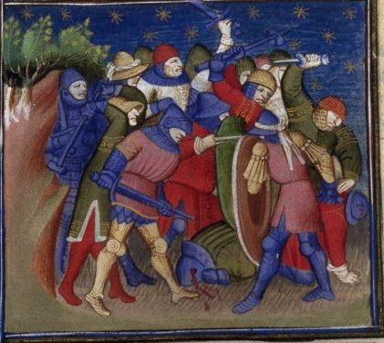

Josué 11 — La Traducción Mister

Esta miniatura ilustra la Bible historiale de Guiard des Moulins, la traducción medieval francesa de la Biblia más copiada, en un manuscrito hecho en París hacia 1415–1420 —la misma tradición de Escritura vernácula e ilustrada que puso una escena de batalla junto a casi cada capítulo de Josué, por menor que fuera. ⚠️ El iluminador viste la pelea con armadura de placas del siglo XV y un cielo nocturno estrellado, no con el vestido de la Edad de Bronce tardía ni una emboscada diurna: es el anacronismo estándar de la ilustración bíblica medieval, que viste cada batalla con el equipo del propio siglo. El fondo estrellado puede leer el de repente del propio capítulo (v7) como un ataque nocturno, aunque el texto no especifica la hora. Un hombre caído sangra en el centro de la refriega —una sola baja que representa la propia cuenta del capítulo de ninguna, ya que el v8 dice que Israel no dejó sobreviviente alguno de la coalición.

★★ La campaña del norte se abre exactamente como se abrió la del sur. Josué 10:1–5 (ya en estas páginas) tenía a Adonisedec, rey de Jerusalén, oír de las victorias de Josué y convocar por nombre a cuatro reyes amorreos más; este capítulo tiene a Jabín, rey de Hazor, oír y convocar a tres por nombre, y luego a toda una región más. Dos coaliciones, dos reyes que actúan primero por miedo y no por haber sido atacados, y dos listas de nombres que el narrador se toma la molestia de conservar.
★ La geografía esta vez es toda la brújula, no una lista de ciudades. Norte, montaña, Arabá, tierra baja, costa, oriente y occidente —tres de los cuatro términos (montaña/Sefelá/Arabá, sin el Néguev) que cerraron el propio resumen de la campaña del sur (Josué 10:40–41, ya en estas páginas) vuelve a aparecer aquí para abrir la del norte, antes de que se pelee una sola batalla.
★★ El heveo está ahora en Hermón, no en Gabaón. El último heveo que este libro nombró hizo la paz con astucia (Josué 9, ya en estas páginas); este otro es arrastrado a la coalición, en el extremo opuesto de la tierra, bajo la montaña más alta de la región. Véase Mizpá (al pie de Hermón) —no la Mizpá de Galaad ni la de Benjamín, las dos más adelante en la historia.
★★★ El ejército levantado contra Israel se mide con las palabras del propio Abraham. Ka-jol asher al sefat, «como la arena que está a la orilla de», está en cuatro versículos de la Biblia hebrea: Génesis 22:17 (ya en estas páginas, todavía no en español), donde nombra cuántos descendientes jura Jehová dar a Abraham; este versículo, donde nombra al enemigo formado para impedir que esos descendientes tomen la tierra que se les prometió; 1 Samuel 13:5, donde se vuelve el propio ejército de los filisteos contra Israel; y 1 Reyes 5:9, donde se vuelve positiva otra vez como la amplitud del propio entendimiento de Salomón. La misma imagen sirve a una bendición y a una amenaza, según de qué lado se encuentre el lector.
★ «Se reunieron de común acuerdo.» Vayivva'adu es una cita deliberada, no una leva por casualidad —un capítulo antes los reyes del sur simplemente se reunieron y subieron (Josué 10:5, ya en estas páginas); esta coalición fija primero un punto de encuentro, las aguas de Merom, y solo después marcha hacia él.
★★★ La orden no es solo vencer a los caballos, sino inutilizarlos para siempre. Te'aqqer, «desjarretarás», es el mismo verbo raro que usó Jacob, muriendo, de la masacre de Simeón y Leví en Siquem: en su terquedad desjarretaron un toro (Génesis 49:6, ya en estas páginas) —allí, crueldad gratuita condenada en el mismo aliento que el asesinato; aquí, una orden divina cumplida dos veces, una vez dada (v6) y una vez ejecutada (v9), con el mismo verbo las dos veces. Los caballos no se matan de inmediato, solo se inutilizan de forma permanente, de modo que los carros que tiraban quedan inservibles sin que los animales se conviertan en botín.
★ El estante se divide sobre la palabra misma. En inglés, la KJV y la Geneva conservan el verbo arcaico ‘hough’, mientras la NWT y la NIV leen ‘hamstring’. La RV60 y la RV 1909 leen las dos «desjarretarás», y la NVI lo convierte en una imagen de patas rotas, «romperán las patas».
★★ David hace lo mismo más tarde, con caballos que podría haberse quedado. Generaciones después, David captura la fuerza de carros de Hadad-ezer de Soba y desjarreta todos los caballos de los carros, dejándose solo cien carros (2 Samuel 8:4; 1 Crónicas 18:4, ninguno todavía en estas páginas) —el mismo verbo, pero ahora una decisión propia del rey, no una orden transmitida por Jehová, y una decisión acorde con la advertencia de Deuteronomio 17:16 de que un rey de Israel no debe multiplicar caballos para sí.
★ «No les dejaron sobreviviente.» Sarid cierra este encuentro exactamente como cerró batalla tras batalla de la campaña del sur (Josué 10:28–40, ya en estas páginas); el propio resumen del capítulo dice lo mismo con otras palabras: no quedó nadie con aliento (v14), no quedaron anaquitas (v22).
★★★ Hazor se distingue por su rango antes de distinguirse por el fuego. Ki-Jatsor lefanim hi rosh kol ha-mamlajot ha-elle, «porque Hazor era antes la cabeza de todos estos reinos», es la propia explicación del narrador de por qué esta ciudad sola, de toda la campaña, se quema del todo (v11, v13) —la misma distinción que recibieron Jericó y Hai antes de la campaña del sur (Josué 6:24; 8:28), y ninguna otra ciudad del norte. La excavación ha confirmado la afirmación: el Hazor de la Edad de Bronce fue la ciudad más grande de toda la tierra, superando con mucho a cada vecino que aquí se dice que encabezó. Véase Hazor.
★★ Un título real sobrevive a lo que un rey no. Jabín, rey de Hazor, está en un solo otro versículo de toda la Biblia hebrea —generaciones después, y en Hazor otra vez: Sísara, comandante del ejército de un rey Jabín, huye de la batalla que ganan Débora y Barac (Jueces 4:17, todavía no en estas páginas), y ese mismo capítulo dice sin rodeos que este Jabín posterior reinaba en Hazor (4:2). Los lectores han tomado la repetición de tres maneras —una ciudad reconstruida bajo el viejo nombre de una dinastía caída, un título del trono que sobrevivió a cualquier rey concreto, o dos hilos de memoria distintos que la Biblia nunca hace coincidir—, y esta traducción no elige entre ellas. Véase Jabín.
★★★ El versículo que cierra esta sección es el versículo hacia el que todo el libro de Josué ha venido caminando. Lo-hesir davar mikkol asher-tsivvah Yehováh et-Moshe, «no dejó de hacer nada de todo lo que Jehová había mandado a Moisés», responde al encargo dado al principio mismo del libro —cuídate de hacer conforme a toda la ley… no te apartes de ella (Josué 1:7–8, ya en estas páginas)— con un veredicto del narrador en vez de una orden. Una frase de la misma forma —«conforme a todo lo que Jehová había dicho a Moisés»— cierra la campaña entera una segunda vez en el v23.
★ Un montículo que no es una ruina. He-arim ha-omedot al tillam, «las ciudades que estaban en su propio montículo», está en un solo versículo de la Biblia hebrea y en ningún otro —y significa casi lo contrario del montículo que este libro usó en Hai. Un tel olam, «un montículo para siempre», es la propia sentencia de Deuteronomio para un pueblo apóstata y lo que Josué hizo de Hai (Josué 8:28, ya en estas páginas): un lugar reducido para siempre a ruina. Aquí el mismo sustantivo nombra el cimiento ordinario de una ciudad, la elevación sobre la que siempre estuvo, dejada en pie y habitada en vez de quemada. Una palabra, dos destinos, y solo la frase que la rodea le dice al lector cuál.
★★ El estante discrepa fuertemente sobre qué significa «su montículo». La TNM lee «sus propios montículos»; pero la RV60 y la RV 1909 leen «colinas»/«cabezos», y la NVI «cerros» —todas convierten la geografía original en una palabra distinta. En inglés la división es aún mayor: la KJV y la Geneva leen ‘stood still in their strength’, una vieja interpretación que convierte un rasgo del terreno en una postura militar, y la Douay-Rheims ‘on hills and high places’.
★★ Los dos extremos de la conquista nombran un dios de la fortuna y un monte pelado, uno cada uno. Baal-gad junta el nombre del dios de la tempestad con gad, «fortuna, suerte» —un nombre construido sobre el azar, en el extremo norte de una campaña que este libro insiste, en cada vuelta, que nunca se dejó al azar. El monte Halac, «el monte pelado», en el extremo sur, solo recibe esa descripción llana en un otro lugar de la Biblia.
★★★ La fórmula entera se repite, al revés, como el propio resumen de Josué 12. «El monte pelado» está en exactamente dos versículos de la Biblia hebrea: este, de sur a norte, del monte Halac a Baal-gad; y Josué 12:7 (ya en estas páginas), de norte a sur, de Baal-gad al monte Halac —los mismos dos nombres de lugar, en el mismo emparejamiento, dichos una segunda vez en la dirección opuesta, como si la totalidad de lo tomado necesitara decirse dos veces para creerse.
★ Esta campaña no se mide en un solo día. Donde la campaña del sur giró sobre un día lo bastante largo para que un sol se detuviera (Josué 10:12–14, ya en estas páginas), esta solo se fecha como muchos días —la guerra del norte no tiene un milagro único que la sostenga, solo una duración declarada.
★★ «Salvo los heveos que habitaban en Gabaón» vuelve dos capítulos atrás para nombrar otra vez la única excepción. La paz de Gabaón lograda con astucia (Josué 9, ya en estas páginas) se repite aquí como la excepción permanente a una regla que, por lo demás, se mantiene sin un solo caso más: ninguna otra ciudad de todo el relato de la conquista hace la paz con Israel.
★★★ Jehová endurece un corazón contra la paz por segunda vez en esta traducción, y es el mismo verbo del endurecimiento del faraón, no el de Sihón. Lejazzeq, «endurecer», es el verbo de yo endureceré su corazón, dicho del faraón al principio mismo del relato del éxodo (Éxodo 4:21, ya en estas páginas); no es la palabra que Deuteronomio usó de Sihón, que emparejó una raíz distinta, hiqshah, con amats (Deuteronomio 2:30, ya en estas páginas). Dos endurecimientos distintos, dos verbos distintos, el mismo propósito las dos veces: un enemigo al que se le niega la opción de la rendición, para que una guerra ya en marcha llegue a su fin ordenado. Las lecturas difieren sobre cómo un corazón puede ser endurecido por su propio dueño y por Dios en la misma historia sin contradicción; esta traducción declara las dos cosas sin resolverlas, como hace el propio Éxodo.
★★★ Esta es la respuesta narrativa a una pregunta que la generación del desierto hizo una vez y nunca oyó contestada. ¿Quién puede estar en pie ante los hijos de Anac? (Deuteronomio 9:2, ya en estas páginas) fue un miedo retórico, sin respuesta, cuando los espías lo trajeron de Hebrón (Números 13:22, 28, 33, ya en estas páginas); aquí Josué simplemente los extermina de Hebrón, Debir, Anab y toda la montaña de Judá e Israel. Véase los anaquitas.
★★ El remanente queda exactamente en las tres ciudades de donde vendrá después un gigante. Solo en Gaza, en Gat y en Asdod quedaron algunos —y Gat es el propio pueblo natal de Goliat (1 Samuel 17, todavía no en estas páginas). Si su familia desciende literalmente de este remanente o solo se agrupa con los anaquitas por tamaño y por esta misma geografía, la Biblia no lo dice; la coincidencia del lugar es exacta de cualquier modo.
★★★ «La tierra reposó de la guerra» es una frase que Josué repite una vez más de la propia heredad de Caleb (Josué 14:15, ya en estas páginas), y es la raíz sobre la que todo el libro de Jueces construirá su propia frase-bisagra recurrente —pero nunca del mismo modo. El estribillo de Jueces, «y la tierra reposó», está en cuatro versículos de la Biblia hebrea (Jueces 3:11, 3:30, 5:31, 8:28, ninguno todavía en estas páginas), cada uno nombrando un número fijo de años antes de que el ciclo de apostasía vuelva a empezar. Aquí la misma raíz declara un hecho al final de una campaña, no un contrato con plazo; Jueces dedicará un libro entero a mostrar cuán corto resulta ser siempre ese plazo.
Ecos pagados. El tratado heveo de Josué 9 en Gabaón (ya en estas páginas) se nombra dos veces como la excepción que la paz gana en este libro (vv12, 19). La coalición-por-convocatoria de Josué 10 abre la propia coalición de este capítulo casi frase por frase, y su geografía final de cuatro partes (montaña/Néguev/Sefelá/Arabá, 10:40–41) reabre este capítulo en el v16. El encargo de Josué 1:7–8 de guardar toda la ley se responde dos veces, en el v15 y el v23. La promesa de Génesis 22:17 (ya en estas páginas, todavía no en español) a Abraham de descendientes como la arena del mar vuelve, vuelta contra esos mismos descendientes, en el v4; el toro desjarretado de Génesis 49:6 vuelve como orden en los vv6 y 9; el faraón endurecido de Éxodo 4:21 vuelve en el v20; y el miedo sin respuesta a los anaquitas de Números 13/Deuteronomio 9:2 por fin se contesta en el v21.
Ecos plantados. Josué 12 enumerará a cada rey derrotado en las dos campañas, incluidos los reyes de Hazor, Madón, Simrón y Acsaf, y repetirá al revés la fórmula de este capítulo del monte Halac a Baal-gad (v7). Josué 14:15 repite la frase exacta del v23 sobre la propia heredad de Caleb. Josué 19:15 y 19:25 dan a Simrón y Acsaf su lugar asentado dentro de Zabulón y Aser; Madón, derrotado en 12:19, no vuelve a aparecer bajo este nombre. Jueces 4 trae de vuelta a un rey llamado Jabín, que reina en Hazor. Todo el libro de Jueces convierte el la tierra reposó de la guerra de este capítulo en su propio estribillo recurrente y siempre vencido. 1 Reyes 9:15 tiene a Salomón refortificando la propia Hazor. Y 1 Samuel 17 saca de Gat a un gigante filisteo, la única ciudad además de Gaza y Asdod donde sobreviven los anaquitas de este capítulo.
Decisiones. Los números de versículo hebreo y español coinciden en todo el capítulo. El texto masorético lleva un salto abierto, {פ} tras el v5, y tres saltos cerrados, {ס} tras los vv9, 20 y 23. «Jehová» para el tetragrámaton continúa la convención de este proyecto. Kinneret se conserva como el propio nombre del Antiguo Testamento en vez de anticiparse como «el mar de Galilea»; ha-Arabá y ha-Sefelá se conservan como nombres, como en Josué 10; te'aqqer/iqqer es «desjarretar», como en Génesis 49:6; jalalim es «muertos»; sarid es «sobreviviente», como en Josué 10; lefanim es «antes»; jérem/hejerim es «consagrar a la destrucción», como en Josué 6 y 10; tillam es «su propio montículo», distinguido en la nota de tel olam; lo-hesir davar es «no dejó de hacer nada»; ha-har he-jalaq es «el monte Halac», conservado como nombre propio en vez de traducido «el monte pelado» en el propio versículo, con la descripción dada en la nota; yamim rabbim es «muchos días»; hishlimah es «hacer la paz», como en Josué 9 y 10; lejazzeq et-libbam es «endurecer el corazón de ellos», distinguido en la nota del amats de Deuteronomio 2:30; tejinnah es «favor»; vayyajret es «exterminó»; anaqim se conserva como «anaquitas»; y shaqetah mimmiljamah es «reposó de la guerra», distinguido en la nota del propio vatishqot recurrente de Jueces.
Biblioteca. Dos entradas nuevas de diccionario en los dos idiomas: aqar, desjarretar; y shaqat, estar quieto, reposar. Tres entradas existentes de diccionario ampliadas en los dos idiomas: jazak, con los reyes del norte endurecidos de este capítulo; amats, distinguiendo las dos raíces; y tel, con el montículo de sentido contrario de este capítulo. Nueve entradas nuevas de enciclopedia en los dos idiomas: Hazor, Jabín, las aguas de Merom, Cineret, Madón, Simrón, Acsaf, Mizpá (al pie de Hermón) y Baal-gad. Cinco entradas existentes de enciclopedia ampliadas en los dos idiomas: el monte Hermón, con los propios tres nombres de Cineret; los anaquitas, con la resolución de este capítulo; y Gat, Gaza y Asdod, con el remanente que sobrevive.
⚠ Una nota sobre el orden: Josué está en estas páginas en los capítulos 1–19. Josué 20–24 sigue siendo la secuencia abierta; el siguiente de este libro es Josué 20, donde se apartan seis ciudades para el que mata sin querer —Cedes, en la montaña de Neftalí, la primera de ellas.